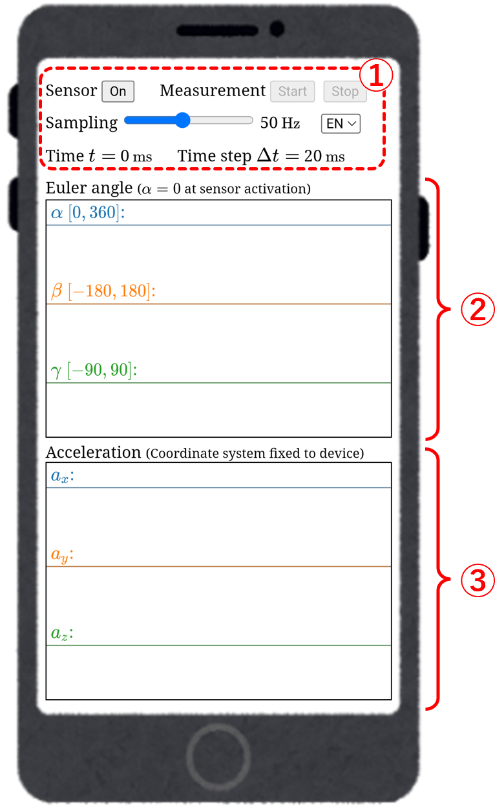
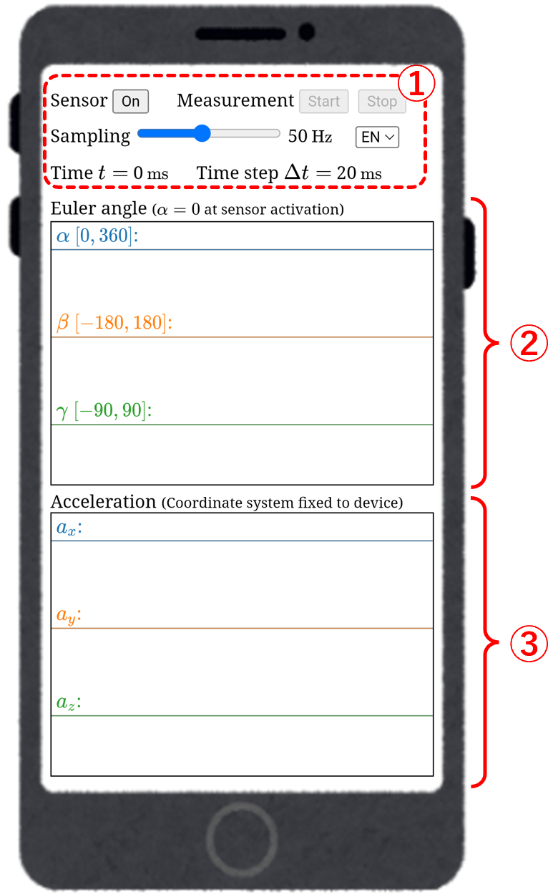
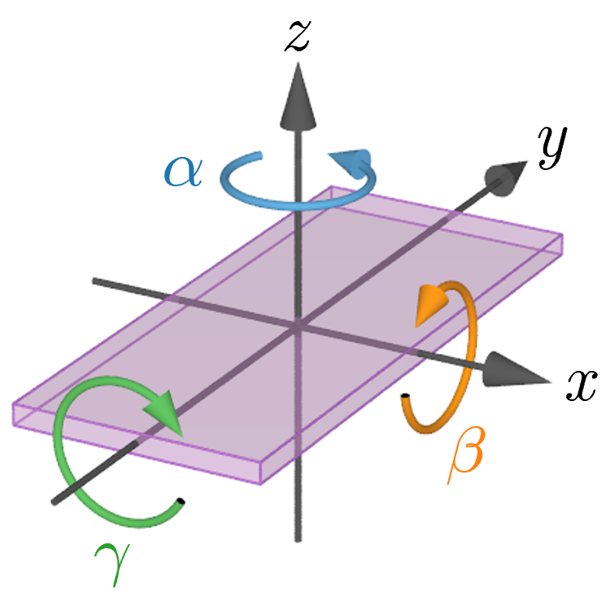
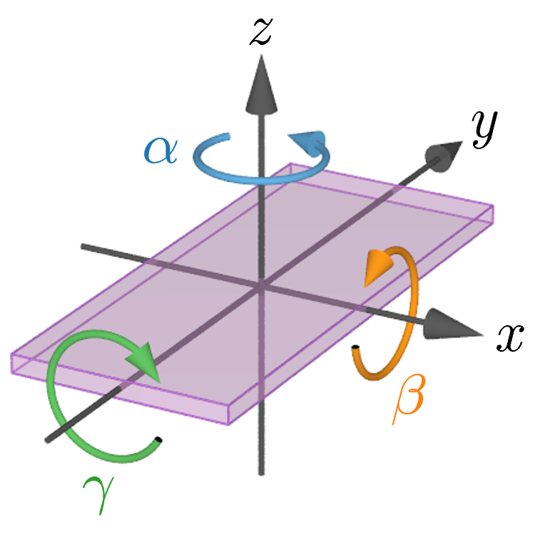
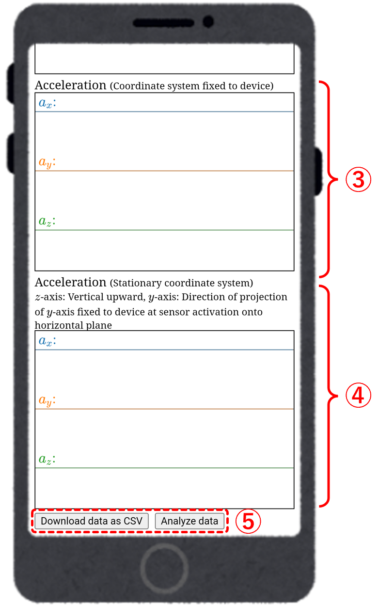
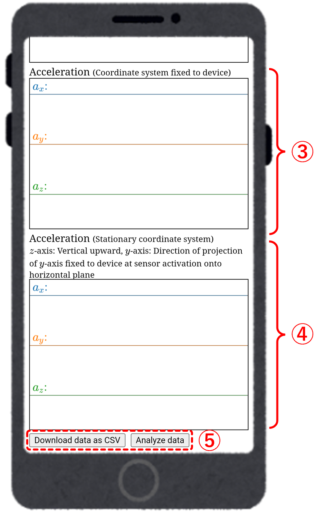

■ Screen structure
App screen (1)


①
Operation buttons and slider
- Sensor On/Off button
Press this button to activate (On) or diactivate (Off) the acceleration sensor. - Measurement Start/Stop button
Press Start button to begin measuring (recording) acceleration data, and press Stop button to end the measurement. - Sampling rate setting slider
Set the measurement sampling rate in the range of 10 Hz to 100 Hz. In the case of 50 Hz, the app measures 50 times per second (the app measures every Δt = 20 ms). - Language selector
EN: English, JP: Japanese
②
Graph area of Euler angles in z-x-y order
For the coordinate axes fixed to the device in the figure below, α, β, and γ are Euler angles around the z, x, and y axes, respectively. The scale of the vertical axis is automatically adjusted so that the graph of each component does not overflow, so the scale is different for each component.


③
Graph area of acceleration in device-fixed coordinate system
ax, ay, az are the x, y, z components of acceleration in the coordinate system fixed to the device, respectively. The scale of the vertical axis is automatically adjusted so that the graph of each component does not overflow, so the scale is different for each component.
When you scroll further down on the measurement app screen, a graph area displaying the acceleration in a stationary coordinate system, obtained through rotation correction, will appear.
App screen (2)


④
Graph area of acceleration in stationary coordinate system
The direction of the z axis in the stationary coordinate system is the vertical direction (vertical upward is positive), and the direction of the y axis in the stationary coordinate system is the direction in which the y axis in the coordinate system fixed to the device at the time of acceleration sensor activation is projected onto the horizontal plane.
ax, ay, az are the x, y, z components of acceleration in the stationary coordinate system, respectively. The scale of the vertical axis is automatically adjusted so that the graph of each component does not overflow, so the scale is different for each component.
ax, ay, az are the x, y, z components of acceleration in the stationary coordinate system, respectively. The scale of the vertical axis is automatically adjusted so that the graph of each component does not overflow, so the scale is different for each component.
⑤
Download and analysis
- Download data as CSV button
Press this button to download the data obtained from measurement as a CSV format file. The columns of the CSV file indicate as follows:
Column 1: time t
Columns 2-4: Euler angles α, β, γ
Columns 5-7: x, y, z components of acceleration in device-fixed coordinate system
Columns 8-10: x, y, z components of acceleration in stationary coordinate system
The downloaded data can be imported into Acceleration Analysis App, spreadsheet software such as Microsoft Excel or Google Sheets. - Analyze data button
Press this button to send the data obtained from the measurement to Acceleration Analysis App and switch to the analysis app screen. The measurement data can be analyzed immediately, even on a smartphone.